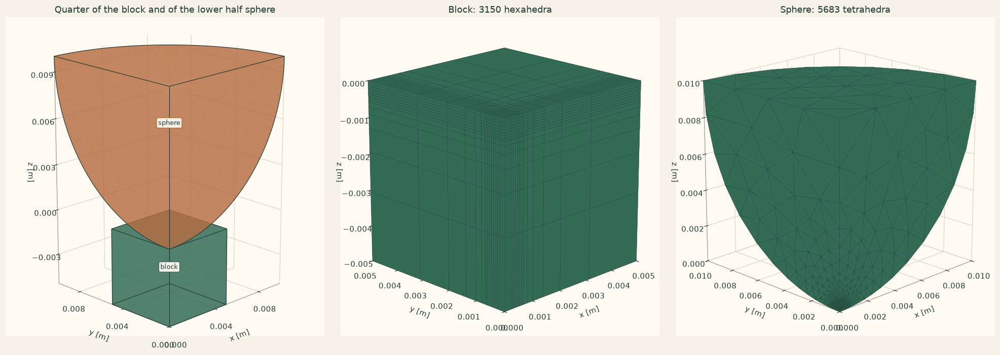

Docs › Examples › Hertz contact of a steel ball on a block
Contact mechanics · 3D
Hertz contact of a steel ball on a block
A steel ball pressed onto a steel block: contact patch, pressure and the subsurface shear peak where rolling-contact fatigue starts.
Run locally with OneSimulation. The example downloads are free. Running them requires an activated runtime. Runtime Alpha 0.2.1a7 · CPython 3.13 on macOS (Apple Silicon), Ubuntu 22.04 (x86-64), and Windows x64. Installation and activation · View pilot plans. Scope of the reference checks.

What it computes
Ball and block are read from STEP files with named faces and meshed independently: tetrahedra for the ball, a graded hexahedral mesh for the block. OneSimulation couples them through mortar contact with Lagrange multipliers, solves the frictionless contact conditions with a semi-smooth Newton method and steps the load on a quarter model, on three mesh levels. The script that builds the STEP files comes with the notebook.
What it checks
On the finest level the contact radius is within 0.6 % of Hertz, the largest subsurface shear within 0.7 % (0.3121 against 0.3100 p0) at 0.482 against 0.479 a, the axis stresses within 0.006 p0, and the Hertz coefficient of the approach within 0.22 %.
Geometry
The notebook starts at the import of the CAD files hertz_sphere_on_flat_3d.step, hertz_sphere_on_flat_3d_sphere.step: STEP (AP242), readable by any CAD program, with the names of the faces that the boundary conditions use. Put them next to the notebook.

The geometry script
The script hertz_sphere_on_flat_3d_geometry.py builds the geometry with the CAD objects of OneSimulation and writes the files. Change a dimension there, run it, and run the notebook again.
"""Geometry of the OneSimulation example "Hertz contact of a sphere on a block".
Builds one quarter of the two bodies with the CAD objects of OneSimulation: the block, 5 mm wide
and 5 mm deep with its upper face at z = 0, goes to hertz_sphere_on_flat_3d.step; the quarter of
the lower half of the sphere (radius 10 mm, touching the block at the origin) goes to
hertz_sphere_on_flat_3d_sphere.step with the named faces plane_x, plane_y, equator and surface.
"""
from onesim.cad.d3 import Box, Sphere
radius, block_size = 10e-3, 5e-3
block = Box(
length=block_size,
width=block_size,
height=block_size,
origin=(0.0, 0.0, -block_size),
)
block.save("hertz_sphere_on_flat_3d.step")
quarter = Box(length=radius, width=radius, height=radius).named("plane")
sphere = Sphere(radius=radius, origin=(0.0, 0.0, radius)) & quarter
faces = sphere.boundaries
sphere = sphere.grouped(
plane_x=faces["plane.x_min"],
plane_y=faces["plane.y_min"],
equator=faces["plane.z_max"],
surface=faces.surface,
)
sphere.save("hertz_sphere_on_flat_3d_sphere.step")The notebook
The complete notebook, cell by cell. Run it to produce the figures and the comparison printout.
A sphere of radius \(R\) is pressed onto a flat block. Both are made of the same linear-elastic steel (Young's modulus \(E\), Poisson's ratio \(\nu\)). Hertz's theory for two elastic half-spaces (K. L. Johnson, Contact Mechanics, Cambridge University Press 1985, Sec. 4.2 and 3.4) predicts for a transmitted force \(F\)
a circular contact patch of radius \(a\) with the pressure \(p(r)=p_0\sqrt{1-r^2/a^2}\) and an approach \(\delta\) of distant points. Below the centre of the contact (Johnson, eq. 3.45)
The largest shear stress \(\tau_1=|\sigma_r-\sigma_z|/2\) occurs below the surface: for \(\nu=0.3\) it reaches \(0.31\,p_0\) at the depth \(z\approx0.48\,a\), where rolling-contact fatigue starts.
One quarter of the assembly is computed. The block comes from the CAD file hertz_sphere_on_flat_3d.step (faces x_min to z_max), the quarter of the lower half sphere from hertz_sphere_on_flat_3d_sphere.step (faces plane_x, plane_y, equator, surface). The script hertz_sphere_on_flat_3d_geometry.py builds both with the CAD objects of OneSimulation.
| face | condition | |---|---| | block x_min, y_min; sphere plane_x, plane_y | symmetry | | block z_min | frictionless support | | sphere equator | frictionless rigid platen, pressed down by the approach | | block z_max against sphere surface | frictionless mortar contact |
import numpy as np
from onesim.cad.exchange import load
from onesim.meshing import (
Geometric,
Piecewise,
StructuredHexahedralMesher,
TetrahedralMesher,
Uniform,
)
from onesim.numerics.fem import FiniteElement, Lagrange
from onesim.physics.solid_mechanics import MortarBody, MortarContact, SmallStrainSolid
from onesim.results.comparisons import convergence
from onesim.results.derived import max_shear, strain_from_gradient, voigt
from onesim.visualization import plots, theme
theme.set()Geometry and meshes
The expected contact radius is 0.5 mm. The block gets n uniform hexahedra per contact radius under the contact and graded cells away from it; the cells of the sphere grow with the distance from the contact point. Three levels are meshed.
block, sphere = load("hertz_sphere_on_flat_3d.step"), load(
"hertz_sphere_on_flat_3d_sphere.step"
)
lower, upper = block.boundaries, sphere.boundaries
radius, width, patch, levels = sphere.size[2], block.size[0], 0.5e-3, (7, 9, 12)
block_meshes = [
StructuredHexahedralMesher(
cells=(round(1.2 * n) + 7, round(1.2 * n) + 7, n + 7),
grading=(
*2
* (
Piecewise(
(
(1.2 * patch / width, Uniform(round(1.2 * n))),
(1 - 1.2 * patch / width, Geometric(7, first=patch / n)),
)
),
),
Piecewise(
(
(1 - patch / width, Geometric(7, first=patch / n, toward="end")),
(patch / width, Uniform(n)),
)
),
),
).generate(block)
for n in levels
]
sphere_meshes = [
TetrahedralMesher(
target_size=radius / 4,
size_field=lambda points: np.clip(
patch / (1.08 * n) + 0.35 * (np.linalg.norm(points, axis=1) - 1.15 * patch),
patch / (1.08 * n),
radius / 4,
),
).generate(sphere)
for n in levels
]
view = plots.Camera(elevation=18, azimuth=225)
fig = plots.figure(1, 3, size=(18, 6))
plots.geometry(
[block.named("block"), sphere.named("sphere")],
camera=view,
title="Quarter of the block and of the lower half sphere",
ax=fig[0],
)
plots.mesh(
block_meshes[0],
groups=("all",),
legend=False,
camera=view,
title=f"Block: {block_meshes[0].cell_count} hexahedra",
ax=fig[1],
)
plots.mesh(
sphere_meshes[0],
groups=("all",),
legend=False,
camera=view,
title=f"Sphere: {sphere_meshes[0].cell_count} tetrahedra",
ax=fig[2],
)
plots.show()Model
Both bodies are steel. The platen on the equator of the sphere is moved towards the block in five steps up to the approach \(a^2/R\); the contact conditions are solved on each of the three levels.
youngs_modulus, poisson_ratio = 210e9, 0.30
contact_modulus = youngs_modulus / (2 * (1 - poisson_ratio**2))
approaches = patch**2 / radius * np.linspace(0.4, 1.0, 5)
steel = SmallStrainSolid(
youngs_modulus=youngs_modulus, poisson_ratio=poisson_ratio, kinematics="volume"
)
results = [
MortarContact(
slave=MortarBody(
solid=steel,
mesh=block_mesh,
boundary=lower.z_max,
displacements=(
(lower.x_min, "x", 0.0),
(lower.y_min, "y", 0.0),
(lower.z_min, "z", 0.0),
),
tractions=((lower.x_max, (0.0, 0.0, 0.0)), (lower.y_max, (0.0, 0.0, 0.0))),
),
master=MortarBody(
solid=steel,
mesh=sphere_mesh,
boundary=upper.surface,
displacements=(
(upper.plane_x, "x", 0.0),
(upper.plane_y, "y", 0.0),
(upper.equator, "z", 0.0),
),
),
normal=(0.0, 0.0, -1.0),
).solve(
times=tuple(range(1, len(approaches) + 1)),
normal_offset=lambda t: -approaches[int(round(t)) - 1],
)
for block_mesh, sphere_mesh in zip(block_meshes, sphere_meshes)
]Contact patch and pressure
The transmitted force follows from the contact pressures; the factor 4 completes the quarter model. Hertz's contact radius and peak pressure are taken for the force of each level, and the contact radius of the simulation from the second moment of the pressure.
forces = [4 * result.normal_pressure @ result.multiplier_measures for result in results]
hertz_radius = [
(3 * force[-1] * radius / (4 * contact_modulus)) ** (1 / 3) for force in forces
]
hertz_peak = [
3 * force[-1] / (2 * np.pi * a**2) for force, a in zip(forces, hertz_radius)
]
distance = [
np.hypot(result.multiplier_coordinates[:, 0], result.multiplier_coordinates[:, 1])
for result in results
]
pressure = [result.normal_pressure[-1] for result in results]
contact_radius = [
np.sqrt(
2.5
* (result.multiplier_measures @ (p * r**2))
/ (result.multiplier_measures @ p)
)
for result, p, r in zip(results, pressure, distance)
]Stresses below the contact
The displacement of the block is differentiated in its finite-element space at the centres of the cells next to the axis; strain_from_gradient gives the strain, Hooke's law the stress and max_shear the largest shear stress. A parabola through the three samples around the maximum gives its size and depth.
lame = youngs_modulus * poisson_ratio / ((1 + poisson_ratio) * (1 - 2 * poisson_ratio))
shear_modulus = youngs_modulus / (2 * (1 + poisson_ratio))
hooke = lambda strain: 2 * shear_modulus * strain + lame * np.trace(
strain, axis1=1, axis2=2
)[:, None, None] * np.eye(3)
spaces = [
FiniteElement(element=Lagrange(order=1)).bind_space(mesh) for mesh in block_meshes
]
across = [
np.unique(np.round(np.asarray(mesh.coordinates)[:, 0], 12)) for mesh in block_meshes
]
down = [
-np.unique(np.round(np.asarray(mesh.coordinates)[:, 2], 12))[::-1]
for mesh in block_meshes
]
depths = [
((nodes[1:] + nodes[:-1]) / 2)[(nodes[1:] + nodes[:-1]) / 2 < 3 * a]
for nodes, a in zip(down, hertz_radius)
]
axis_stress = [
hooke(
strain_from_gradient(
space.gradient(
result.slave_displacement[-1],
np.column_stack(
(
np.full_like(depth, nodes[1] / 2),
np.full_like(depth, nodes[1] / 2),
-depth,
)
),
)
)
)
for space, result, depth, nodes in zip(spaces, results, depths, across)
]
axis_shear = [
max_shear(voigt(stress)) / peak for stress, peak in zip(axis_stress, hertz_peak)
]
parabolas = [
np.polyfit(depth[k - 1 : k + 2] / a, shear[k - 1 : k + 2], 2)
for depth, shear, a in zip(depths, axis_shear, hertz_radius)
for k in [shear.argmax()]
]
largest_shear = [c[2] - c[1] ** 2 / (4 * c[0]) for c in parabolas]
hertz_axial = lambda s: -1 / (1 + s**2)
hertz_radial = lambda s: -(1 + poisson_ratio) * (1 - s * np.arctan2(1.0, s)) + 0.5 / (
1 + s**2
)
scale = np.linspace(0.01, 3.0, 600)
hertz_shear = (hertz_radial(scale) - hertz_axial(scale)) / 2
print(
f"finest level: transmitted force {forces[-1][-1]:.1f} N, Hertz contact radius {1e3 * hertz_radius[-1]:.4f} mm, "
f"peak pressure {hertz_peak[-1] / 1e9:.3f} GPa"
)
print(
"cells per contact radius hexahedra tetrahedra a / a_Hertz largest shear / p0 at the depth z / a"
)
for n, block_mesh, sphere_mesh, a, a_hertz, shear, c in zip(
levels,
block_meshes,
sphere_meshes,
contact_radius,
hertz_radius,
largest_shear,
parabolas,
):
print(
f"{n:24d} {block_mesh.cell_count:11d} {sphere_mesh.cell_count:12d} {a / a_hertz:13.4f} {shear:20.4f} {-c[1] / (2 * c[0]):19.3f}"
)
print(
f"Hertz: largest shear {hertz_shear.max():.4f} p0 at the depth {scale[hertz_shear.argmax()]:.3f} a"
)
study = convergence(
[a / a_hertz for a, a_hertz in zip(contact_radius, hertz_radius)],
[patch / n for n in levels],
)
print(
f"contact radius: change between the two finest levels {100 * study.change:.2f} %"
)
relative_depth = depths[-1] / hertz_radius[-1]
print(
f"axis stresses on the finest level, largest deviation from Hertz for z < 3a: "
f"axial {np.abs(axis_stress[-1][:, 2, 2] / hertz_peak[-1] - hertz_axial(relative_depth)).max():.3f} p0, "
f"radial {np.abs(axis_stress[-1][:, 0, 0] / hertz_peak[-1] - hertz_radial(relative_depth)).max():.3f} p0"
)Force-approach law
Besides the Hertz term \(\propto F^{2/3}\) the approach of the platen contains a part that is linear in \(F\) and belongs to the finite bodies. A fit \(\delta=c_1F^{2/3}+c_2F\) over the five load steps separates the two; \(c_1\) is compared with Hertz.
coefficients = np.linalg.lstsq(
np.column_stack((forces[-1] ** (2 / 3), forces[-1])), approaches, rcond=None
)[0]
hertz_coefficient = (9 / (16 * radius * contact_modulus**2)) ** (1 / 3)
print(
f"Hertz coefficient of the approach: fitted {coefficients[0]:.4e}, Hertz {hertz_coefficient:.4e} "
f"({100 * (coefficients[0] / hertz_coefficient - 1):+.2f} %); linear part at the largest load "
f"{100 * coefficients[1] * forces[-1][-1] / approaches[-1]:+.1f} % of the approach"
)Figure
The largest shear stress in the block in a section through the axis, the contact pressure at every contact node, the stresses on the axis, the force-approach law and the mesh study.
centres = [(nodes[1:] + nodes[:-1]) / 2 for nodes in (across[-1], down[-1])]
x, z = (centre[centre < 2.5 * hertz_radius[-1]] for centre in centres)
section_points = np.column_stack(
(
np.repeat(x, len(z)),
np.full(len(x) * len(z), across[-1][1] / 2),
-np.tile(z, len(x)),
)
)
section_shear = max_shear(
voigt(
hooke(
strain_from_gradient(
spaces[-1].gradient(results[-1].slave_displacement[-1], section_points)
)
)
)
)
section_shear = section_shear.reshape(len(x), len(z)) / hertz_peak[-1]
ellipse, load_line = np.linspace(0, 1.3, 300), np.linspace(
0, 1.05 * forces[-1][-1], 200
)
fig = plots.figure(
layout=[["map", "map", "pressure"], ["axis", "law", "study"]], size=(18, 11)
)
plots.heatmap(
np.concatenate((-x[::-1], x)) / hertz_radius[-1],
-z[::-1] / hertz_radius[-1],
np.concatenate((section_shear[::-1, ::-1], section_shear[:, ::-1])),
limits=(0, 0.32),
contours=[0.31],
label="largest shear stress / p0",
xlabel="x / a",
ylabel="z / a",
title="Block below the contact (line: 0.31)",
ax=fig["map"],
)
plots.line(
points={
f"simulation, {n} cells per a": (r / a, p / peak)
for n, r, p, a, peak in zip(
levels, distance, pressure, hertz_radius, hertz_peak
)
},
reference={"Hertz": (ellipse, np.sqrt(np.clip(1 - ellipse**2, 0, None)))},
xlimits=(0, 1.3),
xlabel="r / a",
ylabel="p / p0",
title="Contact pressure at every contact node",
legend="lower left",
ax=fig["pressure"],
)
plots.line(
points={
"axial": (-axis_stress[-1][:, 2, 2] / hertz_peak[-1], relative_depth),
"radial": (-axis_stress[-1][:, 0, 0] / hertz_peak[-1], relative_depth),
"largest shear": (axis_shear[-1], relative_depth),
},
reference={
"axial": (-hertz_axial(scale), scale),
"radial": (-hertz_radial(scale), scale),
"largest shear": (hertz_shear, scale),
},
ylimits=(3, 0),
xlabel="stress / p0 (compression positive)",
ylabel="depth below the contact centre z / a",
title="Stresses on the axis: simulation (markers), Hertz (dashed)",
legend="lower right",
ax=fig["axis"],
)
plots.line(
load_line,
{
"fit": 1e6
* (coefficients[0] * load_line ** (2 / 3) + coefficients[1] * load_line)
},
points={"simulation": (forces[-1], 1e6 * approaches)},
reference={"Hertz term": 1e6 * hertz_coefficient * load_line ** (2 / 3)},
xlabel="force on the full sphere [N]",
ylabel="approach [µm]",
title="Force-approach law",
legend="upper left",
ax=fig["law"],
)
plots.line(
levels,
{
"contact radius": [
100 * (a / a_hertz - 1) for a, a_hertz in zip(contact_radius, hertz_radius)
],
"largest shear stress": [
100 * (shear / hertz_shear.max() - 1) for shear in largest_shear
],
"largest nodal pressure": [
100 * (p.max() / peak - 1) for p, peak in zip(pressure, hertz_peak)
],
},
hlines=0.0,
markers=True,
xlabel="cells per contact radius",
ylabel="deviation from Hertz [%]",
title="Mesh study",
ax=fig["study"],
)
plots.show()Going further
Change the radius of the sphere in hertz_sphere_on_flat_3d_geometry.py, write the STEP files again and follow the contact radius; give the two bodies different materials, where \(1/E^*=(1-\nu_1^2)/E_1+(1-\nu_2^2)/E_2\); or add a friction coefficient and a tangential load.